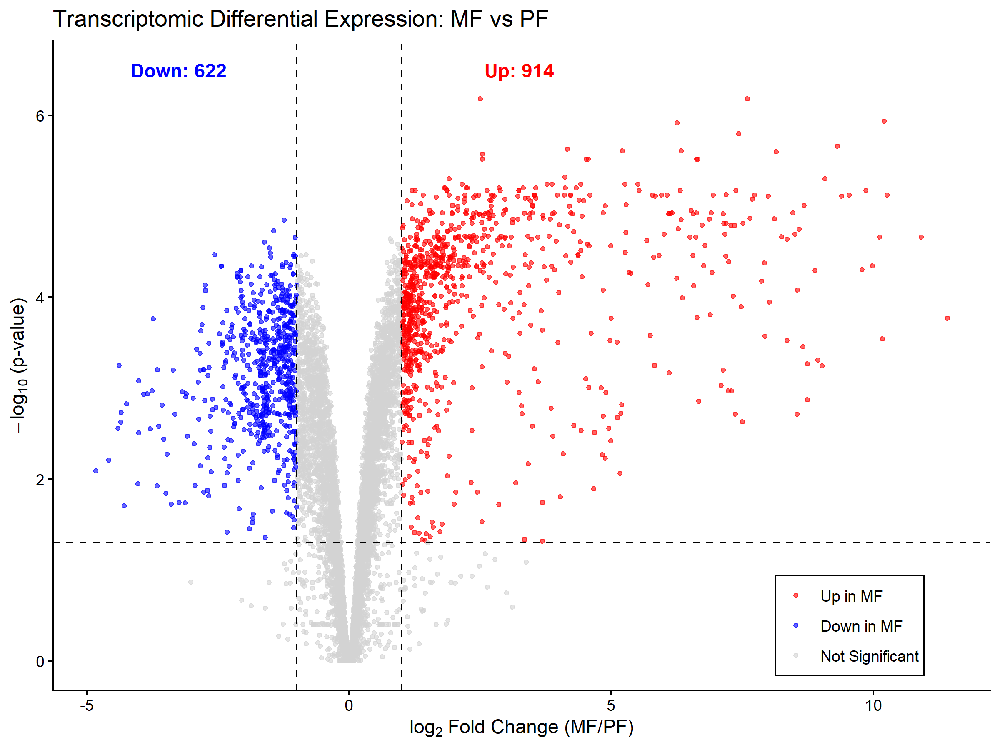

Justin Toh, Ph.D.
Postdoctoral Scientist · Molecular Biologist · Infectious Disease
Postdoctoral Scientist · Molecular Biologist · Infectious Disease
I am a postdoctoral scientist with a Ph.D. in Microbiology from Yale University. My wet-lab background was developed while studying the infectious development of Trypanosoma brucei and engineering antibody-mimetic protein scaffolds at CrossLife Technologies.
While my molecular biology foundation is strong, my computational skills had not kept pace with my experimental work. Rather than let that gap widen, I decided to address it head-on by building this site as a living record of my growth in bioinformatics. Therefore, I will be posting figures and annotated R scripts on a rolling basis: covering volcano plots, UpSet graphs, PhIP-seq analysis, scRNA analysis, and more!
Visualizing multi-omic datasets to identify functional patterns and prioritize candidate genes for further investigation.

This plot compares transcriptomic (left) and proteomic (right) readouts of noninfectious (procyclic) and pathogenic (metacyclic) parasites. Thresholds: |log₂FC| > 1, adjusted p-value < 0.05. Source files.
While useful for visually representing data in presentations, this figure alone may lack resolution without additional context.
Feel free to reach out at justin.yl.toh@gmail.com